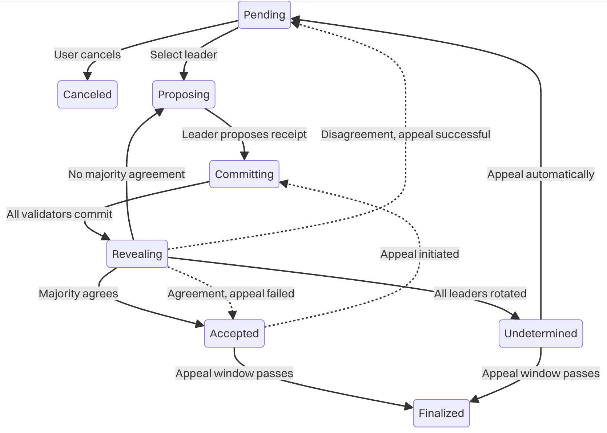
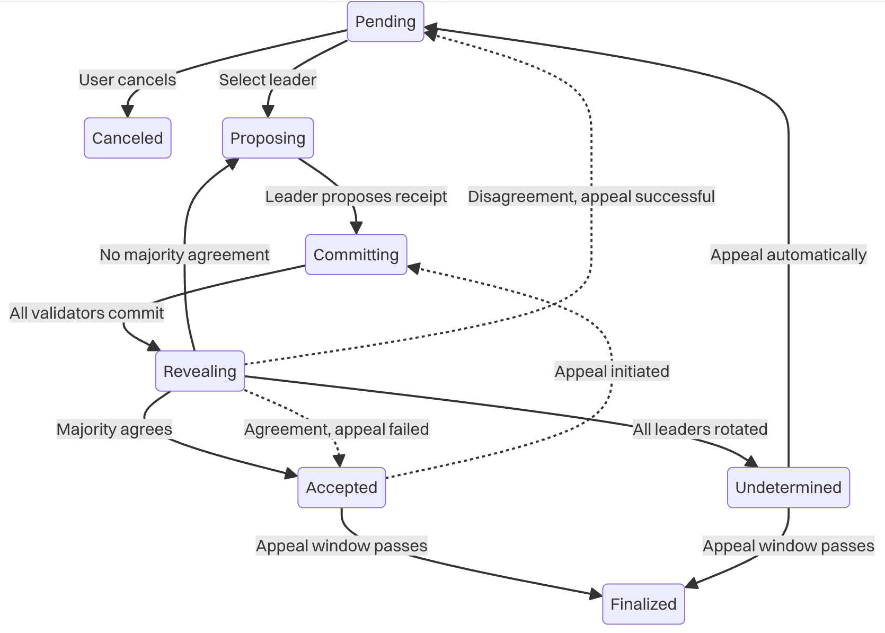
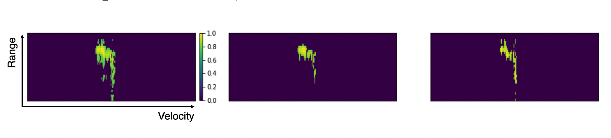
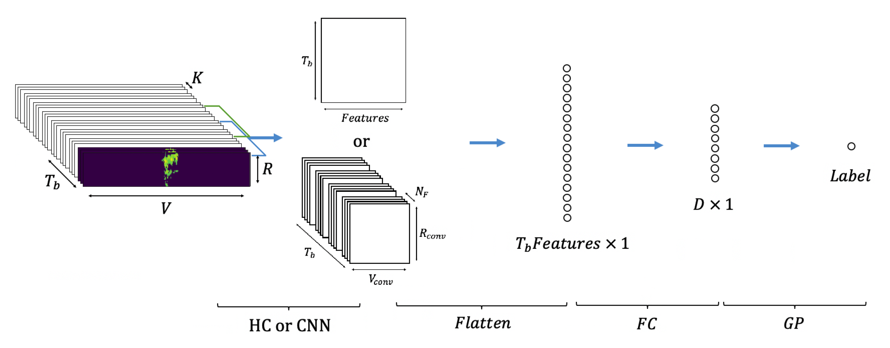
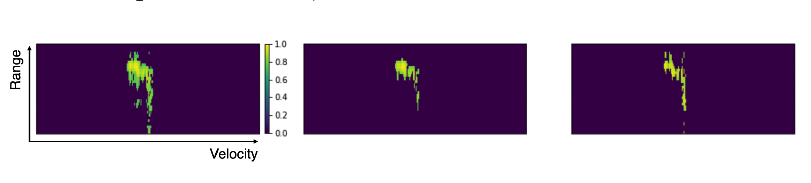
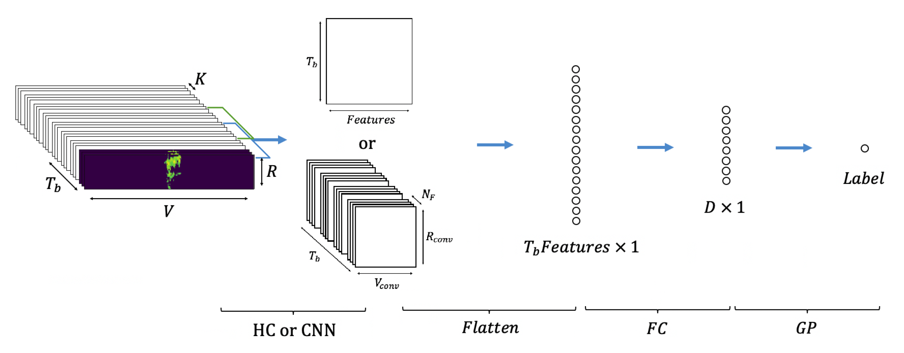

At GenLayer Labs, I led the development of GenLayer Studio, an open-source platform enabling developers to experiment with the GenLayer protocol and prototype decentralized applications.
About Me

I'm a versatile software engineer based in Ericeira, Portugal, with a strong foundation in electrical engineering and embedded systems. My career has taken me across multiple domains, from blockchain and AI to embedded systems and computer vision.
I thrive on solving complex problems and building innovative solutions. Whether it's developing blockchain protocols, implementing safety-critical embedded systems, or creating developer tools, I bring a methodical and efficient approach to every project.
I love leaving my comfort zone, learning new technologies, and traveling the world. My international experience includes working in Belgium, Portugal, and remotely for global teams.
7
Years of Experience
4
Languages Spoken
50+
Technologies Mastered


 


